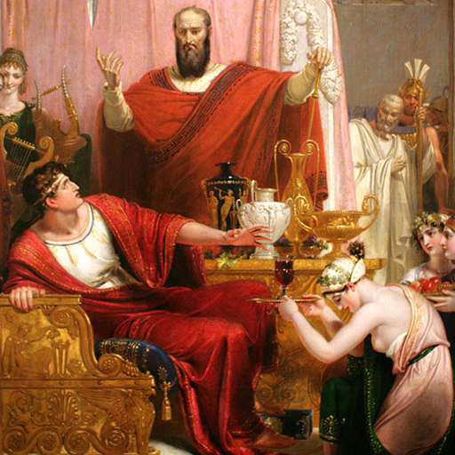

第21卦 火雷噬嗑：咬碎的沉默
上卦：火（☲） ・ 下卦：雷（☳）

核心意義
雷電交加，明照天下，這是需要明辨與決斷的時刻。眼前的阻礙看似堅硬，卻並非無法處理；關鍵在於看清事物的本質，勇敢地做出該有的決定。該行動時不猶豫，該放下時不留戀，果斷本身即是力量。
「我以明斷的智慧看清癥結，該咬合的咬合，該放下的放下。」
祝福
願你有勇氣清除擋在面前的阻礙，果斷地為自己爭取應得的清朗。
五大類別指引
感情
關係中可能存在一個卡了很久的癥結，雙方都知道卻不願觸碰。現在是攤開來處理的時候；用誠實但不傷人的方式點出問題核心，一起想辦法咬合磨合，關係才能繼續往前走。
用誠實而不傷人的方式，點出問題核心：
- 一次處理一個癥結，尋求共同的解法。
- 該設的界線溫柔而堅定地設下。
事業
工作上有一個阻礙已經明顯到無法忽視。可能是棘手的專案、難纏的對手或錯誤的決策。與其繞路閃避，不如正面處理；先看清問題的本質，用果斷的行動突破瓶頸。
正面處理最棘手的阻礙，不再繞路：
- 先看清問題本質，再決定對策。
- 決定了就行動，不讓猶豫消耗能量。
健康
身體可能出現明確的警訊，告訴你某個習慣或狀況必須處理了。別再拖延或自我說服沒關係；正視症狀、安排檢查，該調整的立刻調整，現在的行動會省下未來的代價。
正視身體的警訊，安排必要的檢查：
- 該調整的習慣立刻調整，不拖延。
- 尋求專業意見，不自己硬撐。
財運
財務上可能有需要快刀斬亂麻的決定。停損、解約或調整配置。拖延只會讓損失擴大；看清楚事實的真相，該停的停、該處理的處理，果斷止損也是一種獲利。
該停損或調整的部位，果斷處理：
- 先看清楚事實，不因不甘心而加碼。
- 設下明確的決定時點，不無限期拖延。
人際
人際中可能存在一個必須說清楚的事情，例如被越過的界線或累積的不滿。與其默默忍耐直到爆發，不如及早明確表達；溫和而堅定地把話說清楚，是對彼此都負責的做法。
及早明確表達界線，不讓不滿累積：
- 溫和而堅定，不攻擊也不退縮。
- 說清楚之後，給彼此重新開始的空間。